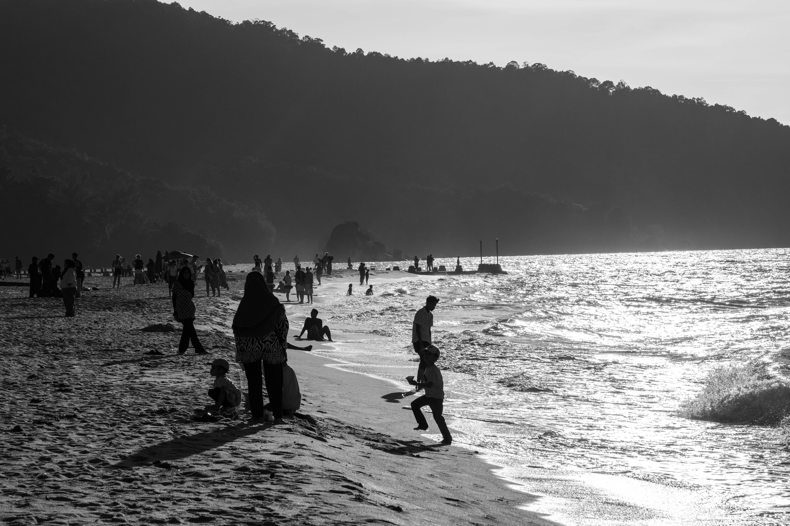
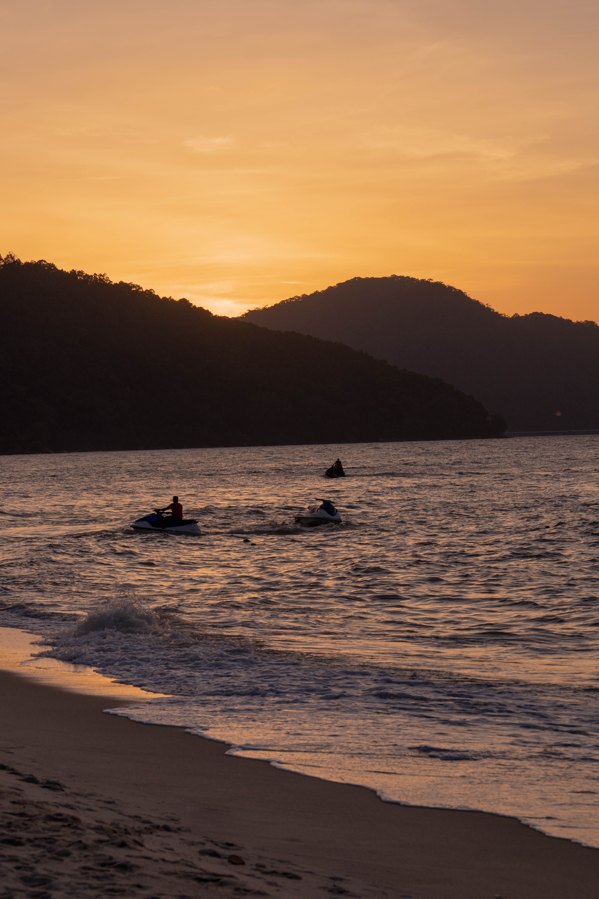

槟城：Batu Ferringhi 的日落余晖
PENANG: SUNSET GLOW AT BATU FERRINGHI
听凭海风吹散城市的喧嚣，在光影交错的岸边找寻自然与人文共生的呼吸节奏。
Letting the sea breeze disperse the urban clamor, finding the rhythm of coexistence between nature and humanity along the shimmering shore.

- SONY A7R4A
- 105mm
- 1/2000s
- f/8
- ISO 100



随着太阳接近海平面，天空被染成了温暖的金橙色。竖向的构图拉伸了天空与海面的距离，也将远处那几艘摩托艇在暮色中的微小身影定格在画面中心。
As the sun approaches the horizon, the sky is dyed in warm golden-orange hues. The vertical composition stretches the distance between sky and sea, framing the tiny silhouettes of jet skis in the twilight at the center.